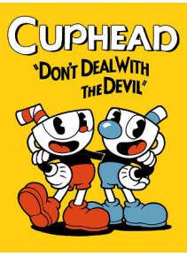

Cuphead

R$62,76

Descrição do produto
Cuphead é um clássico jogo de ação de corridas e armas fortemente focado em batalhas de chefe. Inspirados por desenhos animados da década de 1930, os recursos visuais e de áudio são minuciosamente criados com as mesmas técnicas da era, ou seja, animação de mão tradicional animada a mão, aquarela e gravações de jazz originais
Requisitos
Requisitos do Sistema: Windows 7
Processador: Intel Core2 Duo E8400, 3.0GHz or AMD Athlon 64 X2 6000+, 3.0GHz or higher
Memória: 2 GB RAM
Gráficos: Geforce 9600 GT or AMD HD 3870 512MB or higher
Espaço em disco: 20 GB


© 2017 Alaff e Rodrigo Corporation. Todos os direitos reservados. Todas as marcas são propriedade dos seus respectivos desenvolvedores.